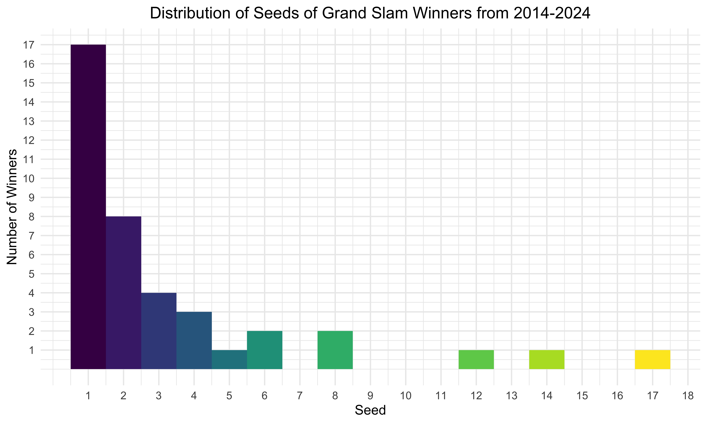

Statistic Analysis
Statistical and Exploratory Analyses on Match Winners (Seeding, Ages, etc)
Distribution of Seeds of Grand Slam Final Winners from 2014-2024
- As an initial exploratory analysis, we display the distribution of overall grand slam winners and their seeds. Not surprisingly, the majority of the winners were seeded #1 coming into the tournament, so they were expected to win. For this analysis, being “seeded higher” means that you are closer to 1 and have higher expectations of winning while “seeded lower” means you are further away from 1.
- It is notable that there were no winners that were not unseeded in the past 10 years for men.

- There were, however, many ranked past the top 5, which were definitely surprises. We show the players who were seeded beyond 5 and ended up winning the tournament in the table below.
- These are all very familiar tennis favorites. Roger Federer, Novak Djokovic, and Rafael Nadal are all amongst the three greatest male players in tennis, so although they were seeded low, they were still favorites amongst the audience to win. At this point, some were close to retirement or came back from injuries and didn’t play many tournaments prior to the Grand Slams, so their rankings would have been lower.
- Stan Wawrinka and Marin Cilic were two players who were always competitive and fan favorites, so while seeded lower, not completely a shock.
| Tournament | Year | Seed | Name |
|---|---|---|---|
| Australian Open | 2014 | 8 | Stan Wawrinka |
| US Open | 2014 | 14 | Marin Cilic |
| Roland Garros | 2015 | 8 | Stan Wawrinka |
| Australian Open | 2017 | 17 | Roger Federer |
| Wimbledon | 2018 | 12 | Novak Djokovic |
| US Open | 2018 | 6 | Novak Djokovic |
| Australian Open | 2022 | 6 | Rafael Nadal |
Seed Match Types and Winners
Now, we want to look at all matches and see the breakdown of matchups. The figure below shows the breakdown by round (for all tournaments and years) of whether both oppoenents were unseeded or if the winner was projected to win or lose (seeded lower/higher).
As expected, the first few rounds had many matches with both opponents unseeded and the majority was won otherwise by the higher seeded player. The turqoise and yellow categories are the most interesting because that means that the winner was projected to win, but lost the match.

We want to see if whether the player being seeded higher won or lost. Using a logistic regression, we looked to see if whether the player was seeded lower (was projected to lose) or higher (was projected to win) affected the binary outcome of winning. We combined
Winner Seeded HigherandWinner Seeded, Loser Unseededtogether to be one category and the same forWinner Seeded LowerandWinner Unseeded, Loser Seeded.- Null Hypothesis:
- \(H_{0}\): Being seeded higher has no effect on the odds of winning
- Alternative Hypothesis:
- \(H_{1}\): Being seeded higher has an effect on the odds of winning
- Null Hypothesis:
Based on the results, when a player is seeded higher/expected to win, they are 1.735x more likely to win than a player who is seeded lower. The p-value was incredibly small and statistically significant.
| Term | Estimate | Std.Error | Statistic | P-Value |
|---|---|---|---|---|
| (Intercept) | 1.251611 | 0.0074136 | 30.27306 | 0 |
| seeded_higher | 1.735224 | 0.0104844 | 52.56733 | 0 |
Ages of Winners
- This plot shows the ages of all match winners across all years and tournaments. From 2014-2019, the upper limit of ages is slowly increasing, which checks out with the “older” generation (Federer, Djokovic, Nadal) but the lower limit stays about the same with new talent coming in each year.
- After the pandemic, however, it seems like the majority of ages dropped to mid to upper 20’s and has continued climbing since.
- 2023 was interesting because it has two higher density areas, similar to how it was 2014-2016.
- We want to see if whether a player being older or younger won or
lost more. Using a logistic regression, we looked to see if whether the
player was younger or older affected the binary outcome of winning.
- Null Hypothesis:
- \(H_{0}\): Being the older player has no effect on the odds of winning
- Alternative Hypothesis:
- \(H_{1}\): Being the older player has an effect on the odds of winning
- Null Hypothesis:
- Based on the results across all years (2014-2024), when a player is older, they are not more likely to win than a player who is younger. The p-value was not statistically signficant, so we fail the reject the hypothesis. However, as you tab through the various years of data, there are some years where being older did have an effect (very small) but still statistically significant effect on winning. These loosely follow some trends where we saw the resurgence and fall of older well-known players when they were injured/back or retired.
Age Models
Overall (2014-2024)
| Term | Estimate | Std.Error | Statistic | P-Value |
|---|---|---|---|---|
| (Intercept) | 1.645922 | 0.0072878 | 68.3748138 | 0.0000000 |
| older_opponent | 1.003404 | 0.0103065 | 0.3297411 | 0.7416029 |
2014
| Term | Estimate | Std.Error | Statistic | P-Value |
|---|---|---|---|---|
| (Intercept) | 1.6699948 | 0.0222204 | 23.0788123 | 0.0000000 |
| older_opponent | 0.9746849 | 0.0314244 | -0.8159592 | 0.4147155 |
2015
| Term | Estimate | Std.Error | Statistic | P-Value |
|---|---|---|---|---|
| (Intercept) | 1.597995 | 0.0312500 | 15.000000 | 0.0000000 |
| older_opponent | 1.064494 | 0.0441942 | 1.414214 | 0.1579094 |
2016
| Term | Estimate | Std.Error | Statistic | P-Value |
|---|---|---|---|---|
| (Intercept) | 1.639013 | 0.0222042 | 22.252268 | 0.0000000 |
| older_opponent | 1.011881 | 0.0314015 | 0.376129 | 0.7068997 |
2017
| Term | Estimate | Std.Error | Statistic | P-Value |
|---|---|---|---|---|
| (Intercept) | 1.560306 | 0.0220704 | 20.157360 | 0.0000000 |
| older_opponent | 1.116542 | 0.0312123 | 3.531817 | 0.0004313 |
2018
| Term | Estimate | Std.Error | Statistic | P-Value |
|---|---|---|---|---|
| (Intercept) | 1.623061 | 0.0221512 | 21.863994 | 0.0000000 |
| older_opponent | 1.031870 | 0.0313265 | 1.001469 | 0.3168381 |
2019
| Term | Estimate | Std.Error | Statistic | P-Value |
|---|---|---|---|---|
| (Intercept) | 1.563052 | 0.0221226 | 20.189283 | 0.0000000 |
| older_opponent | 1.112622 | 0.0312861 | 3.411075 | 0.0006727 |
2020
| Term | Estimate | Std.Error | Statistic | P-Value |
|---|---|---|---|---|
| (Intercept) | 1.642243 | 0.0256487 | 19.3406954 | 0.0000000 |
| older_opponent | 1.007905 | 0.0362727 | 0.2170784 | 0.8282055 |
2021
| Term | Estimate | Std.Error | Statistic | P-Value |
|---|---|---|---|---|
| (Intercept) | 1.7250837 | 0.0221146 | 24.656866 | 0.0000000 |
| older_opponent | 0.9134276 | 0.0312747 | -2.895349 | 0.0038686 |
2022
| Term | Estimate | Std.Error | Statistic | P-Value |
|---|---|---|---|---|
| (Intercept) | 1.691992 | 0.0254481 | 20.665829 | 0.0000000 |
| older_opponent | 0.949506 | 0.0359891 | -1.439699 | 0.1503589 |
2023
| Term | Estimate | Std.Error | Statistic | P-Value |
|---|---|---|---|---|
| (Intercept) | 1.7164789 | 0.0221118 | 24.433758 | 0.0000000 |
| older_opponent | 0.9226087 | 0.0312708 | -2.575885 | 0.0101387 |
2024
| Term | Estimate | Std.Error | Statistic | P-Value |
|---|---|---|---|---|
| (Intercept) | 1.7474185 | 0.0438944 | 12.715511 | 0.0000000 |
| older_opponent | 0.8902268 | 0.0620760 | -1.873172 | 0.0621842 |
Pre-Match Regression Models
- We wanted to know: could we predict whether a player would win their match based on pre-existing data? U